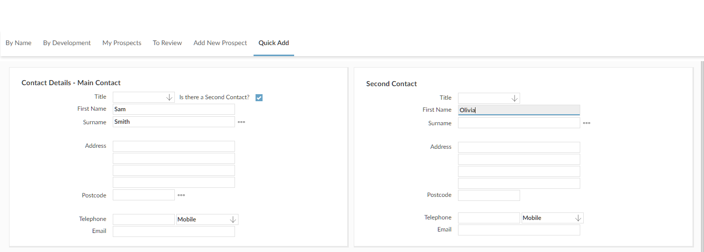
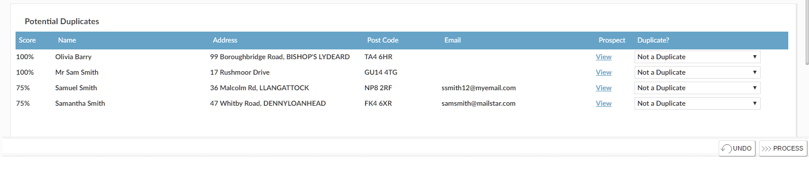

To search for and add a
- On the
- Type in the details you know for the contact. If you want to record a second contact,

As you type,

The list of possible matches is sorted by their score; this is based on how many of the fields you entered match the information on the People Workbench records.
If any of the people in the list are already recorded as a - At this point, you can:
- Use the View link to open an existing
- Use the Quick Add screen to add information to an existing
- Use the Quick Add screen to create a new
- If you are going to create a new
NOTE
Depending on how - Use the Duplicate? field to specify how the potential duplicate People Workbench records relate to the main and second contact details you entered. This will then be used to determine what People Workbench and
- By default, the Duplicate? field is set to Not a Duplicate. This indicates that the person is not the one you were searching for.
- Select Duplicate of Main Contact Above or Duplicate of Second Contact Above if the person in the duplicate list is the same as one of the contacts you entered. You can only select one duplicate of main contact and one duplicate of second contact.
- Select Different Contact for Same
- Click the
 button.
button.
- Duplicate of Main Contact Above
- If the person is not a
- If the person is not a
- If the person is already a
- Duplicate of Second Contact Above
- If the person is not a
- If the person is not a
- If the person is already a
- Different Contact for Same
- If the person is not a
- If the person is a
- If none of the potential matches have an action selected,